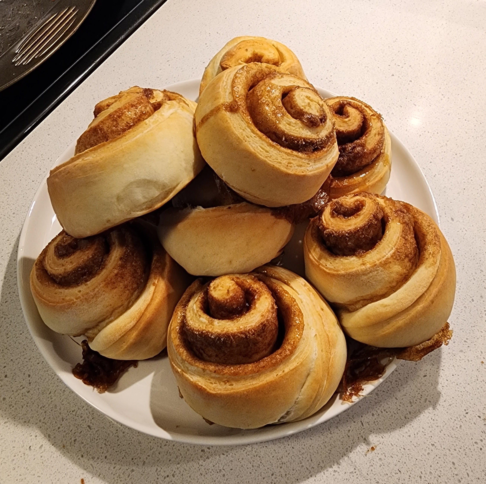

Cinnamon Roll
Bread
Baking
For the english version, click here.

Esponja
A função da esponja não é ativar o fermento, mas sim dar força pra ele, por isso ela é com um água e farinha, tendo mais força de crescimento quando forem adicionados os demais ingredientes da receita.
Ingredientes
- 1 + 1/4 xícara de farinha
- 1/2 xícara de água
- 5g de fermento biológico seco (1 colher de chá)
Passos
- Misturar o fermento e a farinha em uma tigela, e aos poucos ir adicionando a água;
- Mexer bem até formar uma pasta homogênea;
- Deixar descansando por 30 a 60 minutos (o tempo de crescimento da esponja vai variar com a temperatura);
Massa
Ingredientes
- 2 xícaras de farinha
- 1/2 xícara de leite
- 1/3 de colher de sopa de sal
- 1/4 de xícara de açúcar
- 1 ovo
- 2 colheres de sopa de manteiga
- A manteiga precisa estar em um ponto que seja liquido o suficiente para incorporar na massa, mas não pode estar muito quente para não afetar o crescimento da massa.
Passos
- Misturar primeiro os ingredientes sólidos (farinha, sal e açúcar), depois adicionar a esponja na mistura;
- Adicionar o ovo, e ir colocando o leite aos poucos (1/4 de xícara nesse primeiro momento), e ir incorporando os ingredientes, no final desse processo, já adicionar a manteiga;
- Começar a bater a massa para misturar bem os ingredientes, aos poucos ir adicionando o leite restante;
- A quantidade restante de leite (1/4 que restou) talvez não seja totalmente necessária, visto que a absorção de água pela farinha varia de cada tipo de farinha, e inclusive o tamanho dos ovos utilizados pode impactar a umidade da massa, portanto, adicionar leite suficiente apenas para alcançar uma massa que não fique úmida em excesso, nem seca em excesso.
- Começar o processo de sova da massa, o tempo varia de 15 a 20 minutos, dependendo se a sova está sendo feita à mão, ou com uma batedeira;
- Após a sova, reservar a massa por 1 hora;
Recheio
Ingredientes
- 1/4 de xícara de açúcar
- 1/4 de xícara de açúcar mascavo
- 1/2 colher de sopa de canela
Moldar a massa
- Abrir a massa em um retângulo de aproximadamente 35cm por 45 cm, a altura do retângulo vai determinar quantas voltas serão dadas na massa, enquanto o comprimento vai determinar a quantidade de Cinnamon Rolls que a receita renderá, essa medida de 35cm por 45cm resulta em 9 a 10 Cinnamon Rolls, com 3 voltas completas de recheio;
- Espalhar manteiga na massa, deixando uma borda sem manteiga para fechar a massa depois;
- É importante lembrar que a manteiga precisa estar em temperatura ambiente, para não afetar o crescimento da massa e facilitar o processo de espalhar a manteiga.
- Adicionar a mistura do recheio em toda área amanteigada da massa;
- Começar a enrolar a massa, partindo do ponto com recheio em direção ao ponto que foi deixado sem recheio;
- Cortar os Cinnamon Rolls com aproximadamente 3 cm de altura, e já posicionar na assadeira que será utilizada para assar;
- Reservar a massa por mais 30 minutos;
Assar
- Coloque o forno em 180ºC (360º F)
- Adicione a assadeira com os Cinnamon Rolls
- Deixe assar entre 20 a 30 minutos, até eles ficarem com uma cor dourada;
Happy baking!